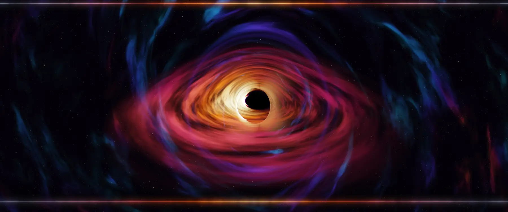

Your desktop, bent by a black hole.
Black Hole Wallpaper is a live wallpaper for macOS. Every pixel follows a ray of light around a spinning black hole, computed in Metal on your Mac.
Move your pointer. This black hole bends light too, a lighter version of the app's.
Free and open source, MIT license. macOS 15 or later.